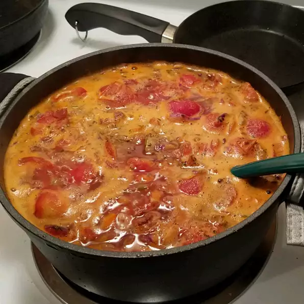

Odin Recipes
Soup

Ingredients
- 1 pound Italian sausage
- 2 onions, chopped
- 1 (28 ounce) can whole peeled tomatoes with juice
- 6 cups chicken broth
- 2 teaspoons dried basil
- 2 cups bow tie pasta
- ½ teaspoon garlic salt
- 1 cup chopped celery
- 1 cup chopped carrots
- 1 ½ cups shredded cabbage
Directions
- In a soup pot, cook sausage over medium heat until no pink remains.
- Add onions, celery, and carrots. Cook uncovered for 5 minutes, or until onions are soft.
- Add tomatoes, chicken broth, cabbage, and basil. Bring to a boil. Stir in macaroni, and cover. Simmer for 10
minutes, or until pasta is tender. Season with garlic salt. Serve.
Nutrition Facts
Per Serving: 399 calories; protein 19.3g; carbohydrates 23.1g; fat 25.7g; cholesterol 57.5mg; sodium 1690.3mg.